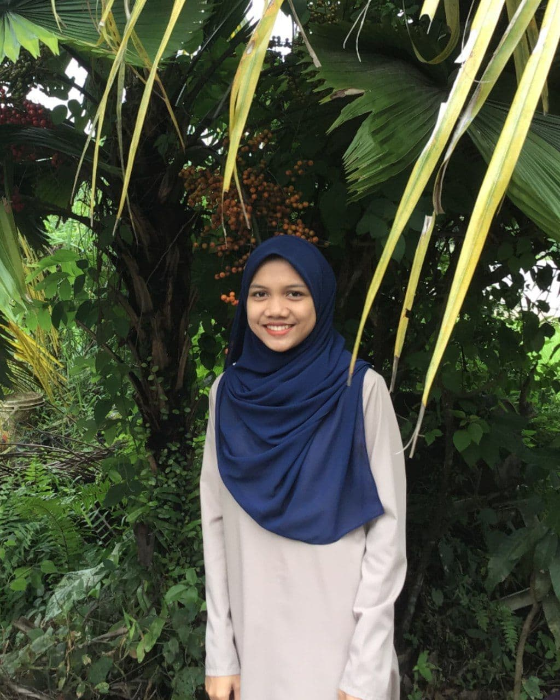

D'la Cakes House owned by four of us namely, Siti Nur Shafiqa, Nurul Ain, Nurul Izzati, and Siti Nabilah. This bakery was established in year 2021 by providing surprise delivery come with numerous varieties of cakes which could fulfill customer's requirements. There are varieties of cakes like Cheese Cake, Vanilla Chocolate Indulgence, Red Velvet, Hazelnut Chocolate, Cheese Strawberry Top, Rainbow Cake, Chocolate Caramel, Layer Chocolate Indulgence, Milo Hazelnut, Caramel Cheese Cake, Strawberry Cake, Pavlova, and Macaron. Not to mention that all these type of cakes also comes with friendly prices which customers able to afford to taste for our cakes.
Our business starts operation from Sunday to Saturday at 9am to 10pm, meanwhile our business are limited for certain areas since we are in this Covid-19 outbreak.
Locationüìç
D'la Cakes House are located at Lot 104 Pondok Tok Kenali, Kubang Kerian, 16150 Kota Bharu, Kelantan. Since this is our new business, there is not direction stated on the google maps, but we provided the location which nearby with our shops which is Hasya Cakes House. We run a business at the strategic location to attract new and lots of customers for people who may never heard about our business, or may never have considered using our services, can be persuaded to try for the first time.
Our Teamsüë©üç≥
| NURUL IZZATI BINTI ZAKARIA |  |
The Founder of our business which is D'la Cakes House namely, Nurul Izzati Binti Zakaria. She is a adventurous, and determined person as she can comes out with a business at the age of 22 years ago. |
|---|---|---|
| SITI NUR SHAFIQA BINTI CHE MAHMOOD | Shafiqa is our Human Resources Manager which handled all of our busines's hiring process, from recruiting, interviewing, and hiring new staff yet determining the suitable salaries for all of us. She is a motivated person and suit the position as she graduated from Diploma in Investment Analysis. | |
| NURUL AIN BINTI MOHAMED PUZI | Nurul Ain, is the Marketing Manager of our business as she is responsible for every thing about the promotion and positioning our services to our existing and new customers. Also, she promote business via Facebook, Instagram, and WhatsApp by posting our current and new updated for our services in order to attract more customers and gain higher sales. | |
| SITI NABILAH BINTI MOHD RIDZUAN | As the Account Manager, Siti Nabilah also responsible to handle many things like prepare reports on account status, build and maintain, long-lasting client relationships, and forecast and tract key account metrics like the quarterly sales results and annual forecats of our business. |  |